전기기능사 (2015-01-25 기출문제)
1과목: 전기 이론
1. 그림의 단자 1-2에서 본 노튼 등가회로의 개방단 컨덕턴스는 몇
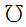
인가?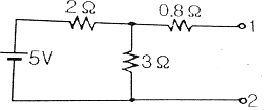
- 0.5
- 1
- 2
- 5.8
(정답률: 52%)

2.
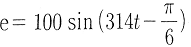
(V)인 파형의 주파수는 약 몇Hz인가?- 40
- 50
- 60
- 80
(정답률: 71%)
3. 비정현파의 실효값을 나타낸 것은?
- 최대파의 실효값
- 각 고조파의 실효값의 합
- 각 고조파의 실효값의 합의 제곱근
- 각 고조파의 실효값의 제곱의 합의 제곱근
(정답률: 66%)
4. 평균 반지름이 r(m)이고, 감은 횟수가 N인 환상 솔레노이드에 전류 I(A)가 흐를 때 내부의 자기장의 세기 H(AT/m)는?
- H = NI/2πr
- H = NI/2r
- H = 2πr/NI
- H = 2r/NI
(정답률: 66%)
5. 어떤 도체의 길이를 2배로 하고 단면적을 1/3로 했을 때의 저항은 원래 저항의 몇 배가 되는가?
- 3배
- 4배
- 6배
- 9배
(정답률: 75%)
6. 기전력이 V0 (V), 내부저항이 r (Ω)인 n개의 전지를 직렬 연결하였다. 전체 내부저항을 옳게 나타낸 것은?
- r/n
- nr
- r/n2
- nr2
(정답률: 76%)
7. 공기 중에서 자속밀도 3Wb/m2의 평등 자장 속에 길이 10cm의 직선 도선을 자장의 방향과 직각으로 놓고 여기에 4A의 전류를 흐르게 하면 이 도선이 받는 힘은 몇 N 인가?
- 0.5
- 1.2
- 2.8
- 4.2
(정답률: 77%)
8. 정전용량 C (㎋)의 콘덴서에 충전된 전하가 q=√2Qsin ωt (C)와 같이 변화 하도록 하였다면 이때 콘덴서에 흘러들어가는 전류의 값은?
- i=√2ωQsinωt
- i=√2ωQcosωt
- i=√2ωQsin (ωt- 60°)
- i=√2ωQcos (ωt- 60°)
(정답률: 53%)
9. 4F 와 6F 의 콘덴서를 병렬접속하고 10V의 전압을 가했을 때 축적되는 전하량 Q (C) 는?
- 19
- 50
- 80
- 100
(정답률: 82%)
10. 회로망의 임의의 접속점에 유입되는 전류는 ∑I=0 라는 법칙은?
- 쿨롱의 법칙
- 패러데이의 법칙
- 키르히호프의 제1법칙
- 키르히호프의 제2법칙
(정답률: 80%)
11. 자체 인덕턴스가 각각 160mH, 250mH의 두 코일이 있다 두 코일 사이의 상호인덕턴스가 150mH 이면 결합계수는?
- 0.5
- 0.62
- 0.75
- 0.86
(정답률: 62%)
12. 저항이 10Ω인 도체에 1A의 전류를 10분간 흘렸다면 발 생하는 열량은 몇 kcal 인가?
- 0.62
- 1.44
- 4.46
- 6.24
(정답률: 75%)
13. 히스테리시스손은 최대 자속밀도 및 주파수의 각각 몇승에 비례 하는가?
- 최대자속밀도 : 1.6, 주파수 : 1.0
- 최대자속밀도 : 1.0, 주파수 : 1.6
- 최대자속밀도 : 1.0, 주파수 : 1.0
- 최대자속밀도 : 1.6, 주파수 : 1.6
(정답률: 66%)
14. 유효전력의 식으로 옳은 것은?(단, E 는 전압, I 는 전류, θ는 위상각이다)
- EIcosθ
- EIsinθ
- EItanθ
- EI
(정답률: 68%)
15. 전원과 부하가 다같이 Δ결선된 3상 평형회로가 있다. 상전압이 200V, 부하 임피던스가 Z=6+j8 Ω인 경우 선전류는 몇 A 인가?
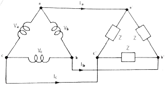
- 20
- 20 / √3
- 20√3
- 10√3
(정답률: 66%)
16. 다음 회로의 합성 정전용량 (μF) 은?
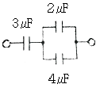
- 5
- 4
- 3
- 2
(정답률: 70%)
17. 물질에 따라 자석에 반발하는 물체를 무엇이라 하는가?
- 비자성체
- 상자성체
- 반자성체
- 가역성체
(정답률: 86%)
18. 그림의 병렬 공진 회로에서 공진 주파수 f0(Hz)는?
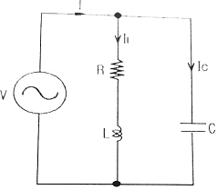
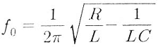
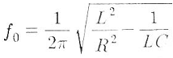
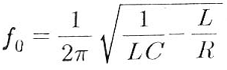
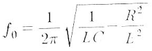
(정답률: 42%)
19. 전기장의 세기 단위로 옳은 것은?
- H/m
- F/m
- AT/m
- V/m
(정답률: 63%)
20. 전기 전도도가 좋은 순서대로 도체를 나열한 것은?
- 은 → 구리 → 금 → 알루미늄
- 구리 → 금 → 은 → 알루미늄
- 금 → 구리 → 알루미늄 → 은
- 알루미늄 → 금 → 은 → 구리
(정답률: 79%)
2과목: 전기 기기
21. 3상 농형유도전동기의 Y-Δ 기동시의 기동전류를 전전압 기동시와 비교하면?
- 전전압 기동전류의 1/3 로 된다.
- 전전압 기동전류의 √3배로 된다.
- 전전압 기동전류의 3배로 된다.
- 전저압 기동전류의 9배로 된다.
(정답률: 47%)
22. 선풍기, 가정용 펌프, 헤어드라이기 등에 주로 사용되는 전동기는?
- 단상 유도전동기
- 권선형 유도전동기
- 동기전동기
- 직류 직권전동기
(정답률: 53%)
23. 3상 전파 정류회로에서 전원 250V일 때 부하에 나타나는 전압(V)의 최대값은?(오류 신고가 접수된 문제입니다. 반드시 정답과 해설을 확인하시기 바랍니다.)
- 약 177
- 약 292
- 약 354
- 약 433
(정답률: 44%)
24. 3단자 사이리스터가 아닌 것은?
- SCS
- SCR
- TRIAC
- GTO
(정답률: 65%)
25. 직류 직권전동기의 특징에 대한 설명으로 틀린 것은?
- 부하전류가 증가하면 속도가 크게 감소된다.
- 기동토크가 작다.
- 무부하 운전이나 벨트를 연결한 운전은 위험하다.
- 계자권선과 전기자권선이 직렬로 접속되어 있다.
(정답률: 59%)
26. 3상 유도전동기의 회전 방향을 바꾸려면?
- 전원의 극수를 바꾼다.
- 전원의 주파수를 바꾼다.
- 3상 전원 3선 중 두선의 접속을 바꾼다.
- 기동 보상기를 이용한다.
(정답률: 77%)
27. 동기전동기의 직류 여자전류가 증가될 때의 현상으로 옳은 것은?
- 진상 역률을 만든다.
- 지상 역률을 만든다.
- 동상 역률을 만든다.
- 진상 · 지상 역률을 만든다.
(정답률: 52%)
28. 슬립이 4%인 유도전동기에서 동기속도가 1200rpm일 때 전동기의 회전속도(rpm)은?
- 697
- 1⑤1
- 1152
- 1321
(정답률: 77%)
29. 브흐홀쯔 계전기로 보호되는 기기는?
- 변압기
- 유도 전동기
- 직류 발전기
- 교류 발전기
(정답률: 75%)
30. 3상 4극 60MVA, 역률 0.8, 60Hz, 22.9kV 수차발전기의 전부하 손실이 1600kW이면 전부하 효율은(%)은?
- 90
- 95
- 97
- 99
(정답률: 60%)
31. 주상변압기의 고압측에 여러 개의 탭을 설치하는 이유는?
- 선로 고장대비
- 선로 전압조정
- 선로 역률개선
- 선로 과부하 방지
(정답률: 51%)
32. 낮은 전압을 높은 전압으로 승압할 때 일반적으로 사용되 는 변압기의 3상 결선방식은?
- △-△
- △-Y
- Y-Y
- Y-△
(정답률: 64%)
33. 정류자와 접촉하여 전기자 권선과 외부 회로를 연결하는 역할을 하는 것은?
- 계자
- 전기자
- 브러시
- 계자철심
(정답률: 72%)
34. 사용 중인 변류기의 2차를 개방하면?
- 1차 전류가 감소한다.
- 2차 권선에 110V 가 걸린다.
- 개방단의 전압은 불변하고 안전하다.
- 2차 권선에 고압이 유도된다.
(정답률: 52%)
35. 변압기유의 구비 조건으로 옳은 것은?
- 절연 내력이 클 것
- 인화점이 낮을 것
- 응고점이 높을 것
- 비열이 작을 것
(정답률: 63%)
36. 동기기에 제동권선을 설치하는 이유로 옳은 것은?
- 역률 개선
- 출력증가
- 전압 조정
- 난조 방지
(정답률: 71%)
37. 동기전동기에 관한 내용으로 틀린 것은?
- 기동토크가 작다.
- 역률을 조정할 수 없다.
- 난조가 발생하기 쉽다.
- 여자기가 필요하다.
(정답률: 50%)
38. 유도전동기의 무부하시 슬립은?
- 4
- 3
- 1
- 0
(정답률: 67%)
39. 직류 발전기의 정격전압 100V, 무부하 전압 109V 이다 이 발전기의 전압 변동률 ε(%)은?
- 1
- 3
- 6
- 9
(정답률: 76%)
40. 직류 스테핑 모터(DC stepping moter)의 특징이다. 다음 중 가장 옳은 것은?
- 교류 동기 서보 모터에 비하여 효율이 나쁘고 토크 발생도 작다.
- 입력되는 전기신호에 따라 계속하여 회전한다.
- 일반적인 공작 기계에 많이 사용된다.
- 출력을 이용하여 특수기계의 속도, 거리, 방향 등을 정확하게 제어할 수 있다.
(정답률: 58%)
3과목: 전기 설비
41. S형 슬리브를 사용하여 전선을 접속하는 경우의 유의사항이 아닌 것은?
- 전선은 연선만 사용이 가능하다.
- 전선의 끝은 슬리브의 끝에서 조금 나오는 것이 좋다.
- 슬리브는 전선의 굵기에 적합한 것을 사용한다.
- 도체는 센드페이퍼 등으로 닦아서 사용한다.
(정답률: 59%)
42. 가공전선의 지지물에 승탑 또는 승강용으로 사용하는 발판 볼트 등은 지표상 몇 m 미만에 시설하여서는 안 되는가?
- 1.2
- 1.5
- 1.6
- 1.8
(정답률: 57%)
43. 조명기구를 배광에 따라 분류 하는 경우 특정한 장소만을 고조도로 하기 위한 조명 기구는?
- 직접 조명기구
- 전반확산 조명기구
- 광천장 조명기구
- 반직접 조명기구
(정답률: 68%)
44. 과전류차단기로 저압전로에 사용하는 퓨즈를 수평으로 붙인 경우 퓨즈는 정격전류 몇 배의 전류에 견디어야 하는가?(오류 신고가 접수된 문제입니다. 반드시 정답과 해설을 확인하시기 바랍니다.)
- 2.0
- 1.6
- 1.25
- 1.1
(정답률: 45%)
45. 고압 이상에서 기기의 점검, 수리 시 무전압, 무전류 상태로 전로에서 단독으로 전로의 접속 또는 분리하는 것을 주목적으로 사용되는 수·변전기기는?
- 기중부하 개폐기
- 단로기
- 전력퓨즈
- 컷아웃 스위치
(정답률: 58%)
46. 지중전선로 시설 방식이 아닌 것은?
- 직접 매설식
- 관로식
- 트라이식
- 암거식
(정답률: 63%)
47. 화약류의 분말이 전기설비가 발화원이 되어 폭발할 우려가 있는 곳에 시설하는 저압 옥내배선의 공사 방법으로 가장 알맞은 것은?
- 금속관 공사
- 애자 사용 공사
- 버스덕트 공사
- 합성수지몰드 공사
(정답률: 71%)
48. 금속관을 절단할 때 사용되는 공구는?
- 오스터
- 녹 아웃 펀치
- 파이프 커터
- 파이프 렌치
(정답률: 75%)
49. 합성수지 몰드 공사에서 틀린 것은?
- 전선은 절연 전선일 것
- 합성수지 몰드 안에는 접속점이 없도록 할 것
- 합성수지 몰드는 홈의 폭 및 깊이가 6.5cm 이하일 것
- 합성수지 몰드와 박스 기타의 부속품과는 전선이 노출 되지 않도록 할 것.
(정답률: 67%)
50. 배전반 및 분전반을 넣은 강판제로 만든 함의 두께는 몇 mm 이상인가?
- 0.8
- 1.2
- 1.5
- 2.0
(정답률: 57%)
51. 실링· 직접부착등을 시설하고자 한다. 배선도에 표기할 그림기호로 옳은 것은?
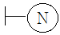
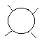
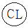
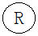
(정답률: 74%)
52. 저압가공전선이 철도 또는 궤도를 횡단하는 경우에는 레일면상 몇 m 이상이어야 하는가?
- 3.5
- 4.5
- 5.5
- 6.5
(정답률: 70%)
53. 인입용 비닐절연전선을 나타내는 약호는?
- OW
- EV
- DV
- NV
(정답률: 63%)
54. 애자사용 공사에서 전선 상호 간의 간격은 몇 cm 이상이어야 하는가?
- 4
- 5
- 6
- 8
(정답률: 66%)
55. 옥내배선의 접속함이나 박스 내에서 접속할 때 주로 사용하는 접속법은?
- 슬리브 접속
- 쥐꼬리 접속
- 트위스트 접속
- 브리타니아 접속
(정답률: 72%)
56. 위험물 등이 있는 곳에서의 저압 옥내배선 공사 방법이 아닌 것은?
- 케이블 공사
- 합성수지관 공사
- 금속관 공사
- 애자사용 공사
(정답률: 75%)
57. 금속몰드의 지지점간의 거리는 몇 m 이하로 하는 것이 가장 바람직한가?
- 1
- 1.5
- 2
- 3
(정답률: 46%)
58. 접지공사의 종류와 접지저항 값이 틀린 것은?(관련 규정 개정전 문제로 여기서는 기존 정답인 4번을 누르면 정답 처리됩니다. 자세한 내용은 해설을 참고하세요.)
- 제1종 접지 : 10Ω 이하
- 제3종 접지 : 100Ω 이하
- 특별 제3종 접지 : 10Ω 이하
- 특별 제1종 접지 : 10Ω 이하
(정답률: 66%)
59. 정격전압 3상 24kV, 정격차단전류 300A 인 수전설비의 차단용량은 몇 MVA 인가?
- 17.26
- 28.34
- 12.47
- 24.94
(정답률: 40%)
60. 합성수지관 상호 및 관과 박스는 접속 시에 삽입하는 깊 이를 관 바깥지름의 몇 배 이상으로 하여야 하는가?(단, 접착제를 사용하지 않은 경우이다.)
- 0.2
- 0.5
- 1
- 1.2
(정답률: 77%)